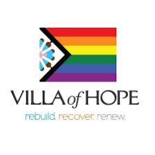
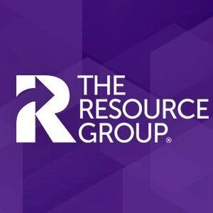
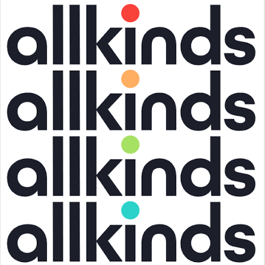
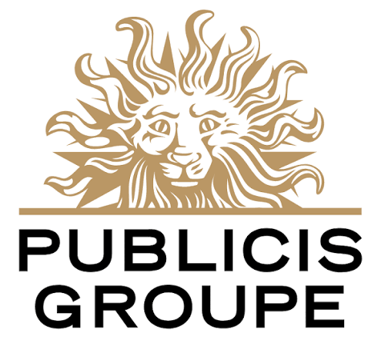

Financial Reporting Analyst
- Built Power BI & SQL dashboards for 20+ program directors, cutting expenses 12% and boosting revenue attainment 19% YoY.
- Prepared regulatory reports for OASAS and OMH; reduced recoupment liability by $500K through precise cost reconciliation.
- Automated financial report compilation with Power Query and Pivot Tables, cutting preparation time by 80%.

Strategic Support & Analytics Intern
- Supported financial analysis of $5M in IT contracts for the National IT Contracting team.
- Mapped cross-departmental contracting processes across 8 departments via 17 stakeholder interviews.
- Built a VBA-automated reporting template that reduced cycle time by 10 minutes per contracting request.
- Integrated 183K lines of EHR and purchase order data using BigQuery and Excel to support Ascension supply chain initiatives.
Investment Banking Intern
- Conducted due diligence on client financials — evaluating health, market position, and growth potential — to support securities issuance.
- Applied sampling techniques to verify compliance and accuracy of financial records at scale.

Sales Associate
- Analyzed sales trends and customer behavior to surface upselling and cross-selling opportunities.
- Weekly performance reporting drove a 7% increase in average transaction value.
Accounting Intern
- Prepared 12 reports on tax reforms and policy updates; reduced client reporting errors by 15%.
- Analyzed monthly financial statements to detect discrepancies and ensure reporting accuracy.

E-Commerce Intern
- Managed 30+ campaign metrics; optimized real-time bidding to improve CTR by 28.4% while cutting CPC by 30%.
- Led A/B testing on Ferrero's New Product Launch creatives, achieving 48.1% ROI improvement YoY.
BCL
Paralegal Intern
- Assisted on cross-border M&A cases — transaction structure design, corporate governance, and shareholder agreements.
- Supported business negotiations for luxury retailer market strategy adjustments in Hong Kong.

Real Estate Research Intern
- Researched national real estate market trends and produced macro industry and company-level research reports.
- Assessed policy impact on target companies and contributed daily market reports.